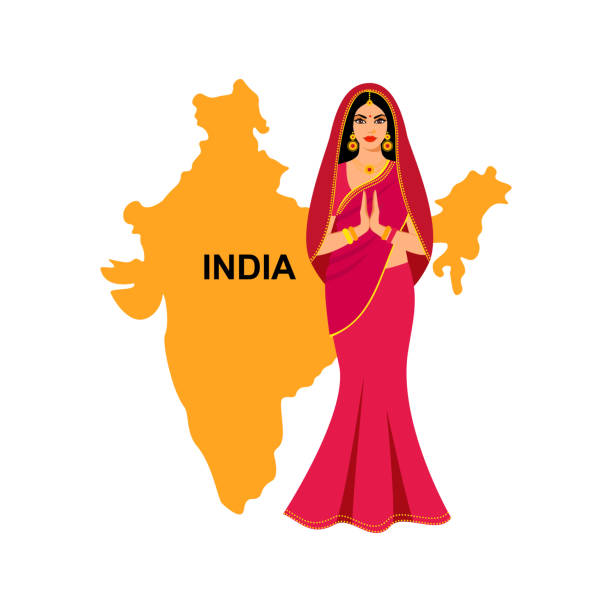
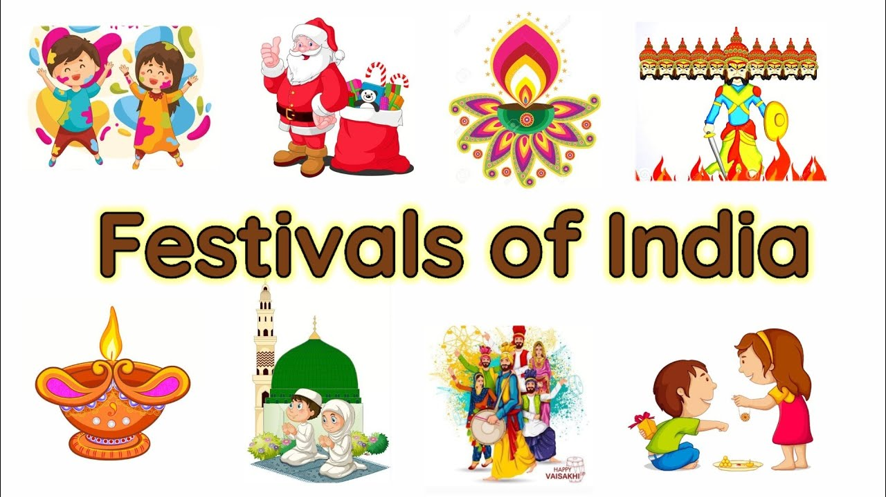
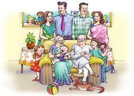
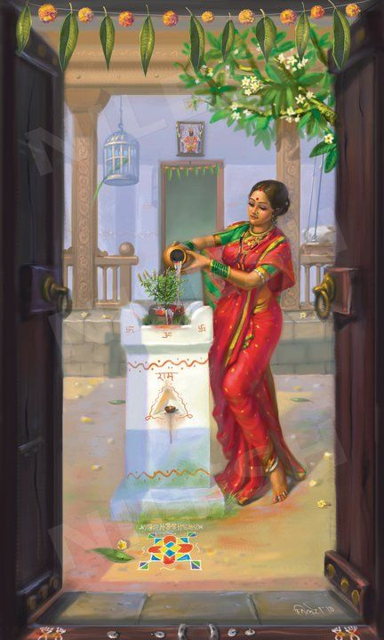
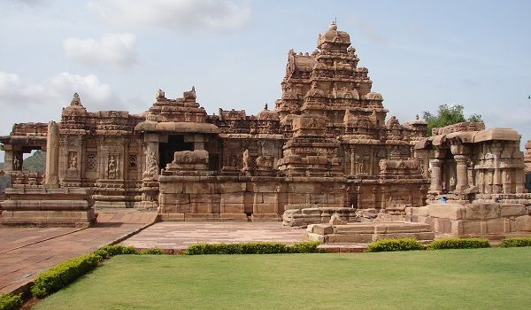
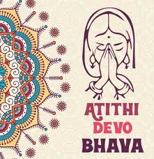
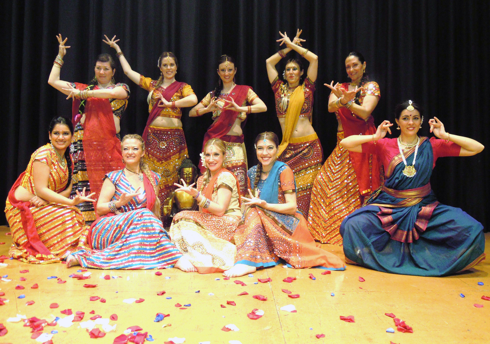
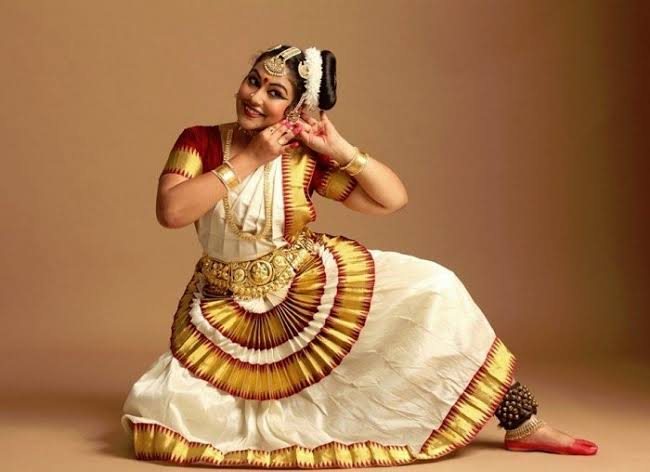
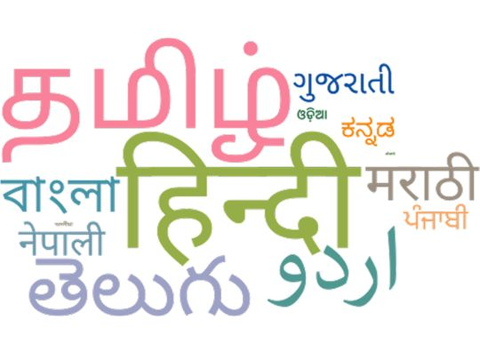

Indian culture and traditions are something which has now become renowned all across the world. We all refer to customs and traditions of India as something very diverse and unique. But seldom do we give a thought to why things are done in certain specific ways. Indian culture is full of several unique customs and traditions, which outsiders might find intriguing. Most of these originate from the Ancient Indian scriptures and texts, which have dictated the way of life in India for thousands of years.
- Greetings
- Religious Customs
- Festivals of India
- Family Structure & Marriage
- Symbols
- Cuisine & Food
- Traditional Clothing
- Dances of India
- Epics & Mythology
- Martial Arts
- Languages
GREETINGS

The Namaste is one of the most popular Indian customs and isn't just restricted to the Indian territory anymore. You have Barack Obama, who has been seen doing it on various occasions, or you had Ban Ki-Moon, the UN Secretary-General, greeting everyone with a namaste at the Times Square in New York on the first International Yoga Day.
Festivals & Religion

India also sees a large number of festivals, mainly because of the prevalence of diverse religions and groups. The Muslims celebrate Eid, the Christians have Christmas and good Friday, the Sikhs have Baisakhi (harvesting of crop), and the birthdays of their Gurus and the Hindus have Diwali, Holi, Makar Sakranti, the Jains have Mahavir Jayanti, the Buddhists celebrate the Buddha's birthday on Buddha Poornima, and quite honestly, the number is endless. All of these translate to holidays in our book, of course.
JOINT FAMILIES

Also, in India, there exists the concept of a joint family, wherein the entire family (parents, wife, children and in some cases, relatives) all live together. This is mostly because of the cohesive nature of the Indian society, and also reportedly helps in handling pressure and stress.
Symbol

Symbols or nature worship, system of religion based on the veneration of natural phenomena, for example, celestial objects such as the sun and moon and terrestrial objects such as water and fire. Stars, rain, and animals are comprehended as natural objects or forces that influence them and are thus in some way worthy of being venerated or placated. Nature as an entity in itself, in contrast with human society and culture or even with God, is a philosophical or poetic conception that has been developed among advanced civilizations. This concept of nature worship, therefore, is limited primarily to scholars involved in or influenced by the modern study of religion.
Architecture - The Science Behind Temples

Most temples are located along magnetic wave lines of the Earth, which help in maximising the available positive energy. The copper plate (called Garbhagriha or Moolasthan) buried under the main idol absorbs and resonates this energy to its surroundings. Going to the temple often helps in having a positive mind and garnering positive energies, which in turn lead to healthier functioning.It is also a practice to take off footwear before entering places of worship because they would bring in the dirt to an otherwise cleansed and sanctified environment.
Traditions and Customs - Atithi Devo Bhavah

In India, the saying'Atithi Devo Bhavah' is also integral. It means 'the guest is equivalent to god'. It is a Sanskrit verse taken from the Hindu scriptures, which later became a part of the Code of conduct for Indian society since the guest has always been of supreme importance in the Culture of India.
Dresses of India - Indian Ethnic Wear

Indian women are often seen sporting 'saris'. The sari is a single cloth and needs no stitching; it is easy to make and comfortable to wear, and also adheres to religious etiquette. It initially started as a Hindu tradition but has very elegantly spread across all religions. The same applies to the more functional 'Kurta-Pyjama', and the formal wear of 'Sherwani' for Indian men of all faiths.
Dances of India

India is a land of 'unity in diversity', and our dances are no different. Different forms of dance(classified as folk or classical) find origin from different parts of the country, and they are a way of representation of the particular culture from which they originate. Eight classical dances, which are classified as Indian classical dances and find a mention in the Hindu Sanskrit text 'Natyashashtra' are: Bharathanatyam, Kathak, Kathakali, Kuchipudi, Manipuri, Mohiniyattam, Odiddi, Sattriya
Cuisine - Indian Food

Indian food and cuisine not only form an integral part of the culture of India but are also one of the critical factors of India's popularity worldwide. The style of cooking varies from region to region, though unanimously, Indian food has a significant reputation for its extensive use of spices and herbs. Just like dances, religious practices, language and clothes, you will also find a wide variety of food throughout the country. Almost every region is known for a signature dish or ingredient.
Languages

India is socially, culturally, and linguistically very diverse. Hindi
and English are widely spoken and recognised for official purposes. Other than than, there are
22 scheduled languages recognised by the constitution of India. However, more than 400
languages and dialects in India are still not known. Dialects change even with a few
kilometres of travel in the state. Over the years, about 190 languages have become endangered
due to very few surviving speakers.
There exist thousands of traditions and culture in India, and quite a few of them would leave
outsiders rather curious. But the crux of Indian society and culture has always been to be well
mannered, polite, respect others, and progress together.